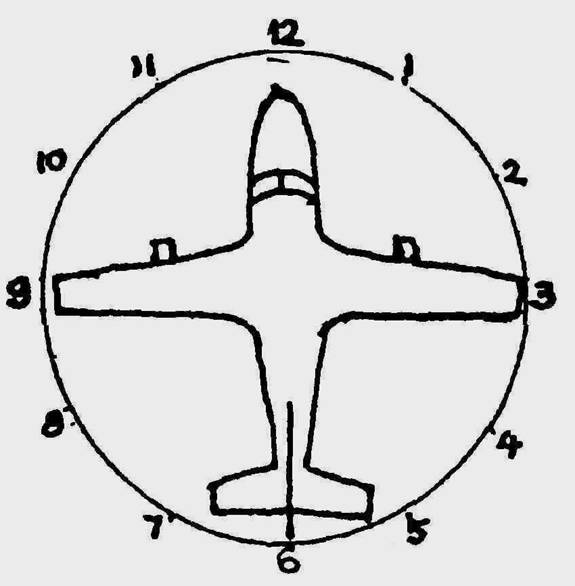
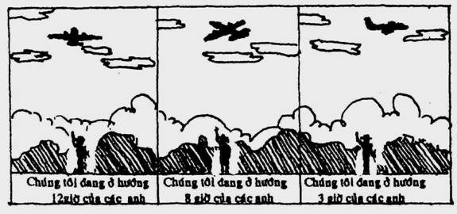
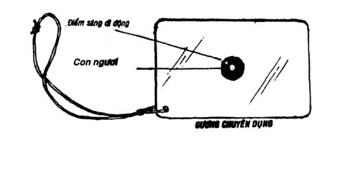
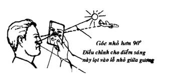
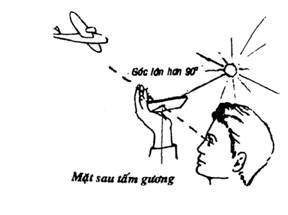
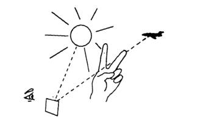
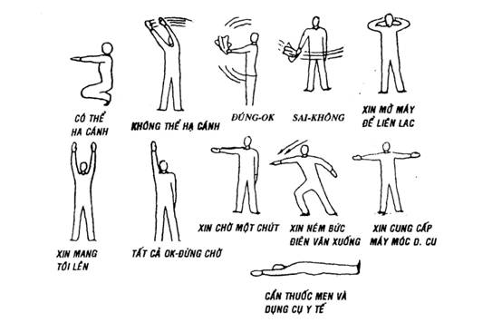
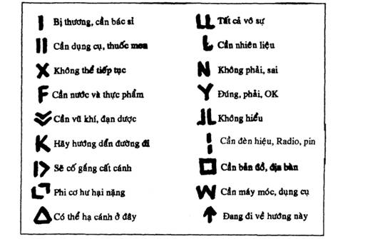
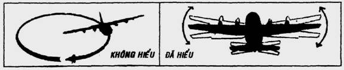

Để tìm kiếm những người mất tích, những phi cơ hay tàu thuyền gặp nạn... người ta thường sử dụng phi cơ, vì phi cơ có tầm họat động và quan sát rộng lớn, cơ động và nhanh chóng. Vì vậy, các bạn phải biết một số quy ước cũng như cách thức để bắt liên lạc với phi cơ như sau:
Sử dụng máy vô tuyến
Nếu các bạn có máy vô tuyến điện và có thể bắt được liên lạc với phi cơ thì rất tốt, nhưng các bạn phải biết cách "điều không" để chỉnh hướng bay, để kéo họ vào vùng. Chúng ta có 2 trường hợp:
1- Không thấy phi cơ
2- Thấy được phi cơ
1- Không thấy phi cơ:
Trường hợp phi cơ còn rất xa, chỉ có thể nghe được tiếng động cơ nhưng không thể thấy máy bay (hay thấy mà không rõ hình dáng), chúng ta phải cố gắng lắng nghe (hay nhìn) xem phi cơ đang ở hướng nào (Đông, Tây, Nam, Bắc...)trong không gian. Thí dụ nếu các bạn nghe tiếng máy bay ở hướng Đông Nam, thì các bạn liên lạc "Các anh đang ở hướng Đông Nam của tôi (xin nhấn mạnh chữ của tôi). Như thế người ta sẽ đổi hướng bay để bay về phía các bạn cho tới khi bạn:
2- Thấy được phi cơ:
Nếu đã nhìn thấy được hình dáng của phi cơ, thì các bạn có thể "điều không" chỉnh hướng một cách chính xác theo cách sau:
Các bạn hãy tưởng tượng chiếc phi cơ như đang nằm trên một chiếc đồng hồ: Đầu của phi cơ là 12 giờ, đuôi là 6 giờ, cánh bên phải của phi cơ (hay hông bên phải nếu là phi cơ trực thăng không cánh) là 3 giờ, cánh bên trái của phi cơ là 9 giờ. Từ đó chúng ta suy ra khoảng cách của các giờ khác như 1 - 2 giờ, 4 - 5 giờ, 7 - 8 giờ...

Theo quy ước trên, các bạn có thể liên lạc với phi cơ để thông báo vị trí của các bạn theo phương pháp dưới đây:

Nếu phi cơ bay ngang đầu bạn, khi bạn ở đúng vị trí dưới bụng phi cơ thì kêu lên "bingo", chắc chắn người ta sẽ nhìn thấy bạn.
Dùng gương phản chiếu
Nếu không có máy vô tuyến để liên lạc và nếu trời nắng, các bạn có thể dùng gương phản chiếu (hay miếng kim lọai đánh bóng) để ra hiệu cho phi cơ cũng rất hiệu quả. Có nhiều lọai gương phản chiếu:
Gương chuyên dụng đặc biệt:
Là loại gương thường được trang bị cho quân đội, các nhà thám hiểm, khai phá... Gương có 2 mặt đều tráng thủy, ở giữa có 1 vòng tròn đường kính khoảng 2 cm, không tráng thủy nhưng có lót lưới ô vuông đặc biệt (tựa như lưới mùng), chính giữa vòng tròn đó có 1 con ngươi trong suốt dùng để dò tìm mục tiêu.
Khi đặt gương vào mắt (đối diện với mặt trời), nếu nhìn kỹ, các bạn sẽ thấy 1 điểm sáng mờ mờ di đông trên lưới vuông trong vòng tròn. Điểm sáng đó chính là tiêu điểm phản chiếu của gương. Các bạn chỉ cần điều chình sao cho điểm sáng mờ đó trùng lên mục tiêu (như phi cơ, toàn thủy, người...) mà bạn muốn họ nhìn thấy các bạn.

Gương chuyên dụng thường
Cũng tráng thủy 2 mặt, nhưng ở giữa không có vòng tròn lót lưới mà chỉ có 1 lỗ nhỏ hình tròn hay chữ thập. Khi sử dụng các bạn đặt gương cách mặt mình khoảng 10 - 15 cm, đối diện với mặt trời. Nếu giữa bạn, mặt trời và mục tiêu tạo thành góc nhỏ hơn 90 độ, ánh sáng mặt trời sẽ chiếu qua lỗ nhỏ giữa gương và in lên mặt bạn thành 1 chấm sáng (các bạn thấy nó dễ dàng qua mặt gương phía sau).

Hướng gương vể phía mục tiêu (qua lỗ nhỏ giữa gương), đồng thời điểu chỉnh tấm gương làm sao cho chấm sáng ter6n mặt bạn lọt vào lỗ nhỏ giữa gương.
Nếu giữa bạn, mặt trời và mục tiêu tạo thành 1 góc lớn hơn 90 độ, các bạn đặt tấm gương vào trong lòng bàn tay của mình. các ngón tay hơi co lên che khoảng 1/2 tấm gương. Làm sao cho ánh nắng phản chiếu từ tấm gương phải hắt lên đầu ngón tay của mình. Nâng gương lên ngang mặt, các bạn tìm kiếm mục tiêu qua lỗ nhỏ ở giữa gương và hướng tấm gương quay về phía đó, nhưng phải giữ cho ánh sán phản chiếu lúc nào cũng nằm trên đầu ngón tay (bằng cách dùng ngón tay cái để điều chỉnh).

Gương soi mặt thường hay một miếng kim khí bóng:
Các bạn có thể sử dụng một gương soi mặt thông thường hay một miếng kim khí bóng láng để ra hiệu cho phi cơ, tuy nhiên các bạn cũng phải biết cách đưa ánh sảng phản chiếu về hướng mục tiêu. Muốn được như thế, một tay các bạn cầm gương đưa lên ngang tầm mắt, cách mặt khoảng 20 - 30 cm, tay kia các bạn đưa thẳng ra phía trước gương 2 ngón tay làm thành hình chữ V.
Điều chỉnh cho ánh sáng mặt trời từ tấm gương hắt lên giữa 2 ngón tay hình chữ V đó. Chỉnh gương làm sao cho ánh sáng phản chiếu lúc nào cũng nằm như thế rồi từ từ di chuyển hai ngón tay về phía mục tiêu cho đến khi nào mục tiêu lọt vào giữa hai ngón tay chữ V.

Ghi chú
Những phương pháp này chỉ sử dụng được trong những ngày có nắng và rất hiệu quả, vì người ta có thể trông thấy các bạn từ khoảng cách rất xa (20 - 30 km)
Nếu trời không có nắng các bạn phải dùng phương pháp khác như khói, lửa, hỏa pháo... hay:
Sử dụng dấu hiệu:
Khi phi cơ đã nhìn thấy các bạn, nếu các bạn không có máy điện đàm để liên lạc, thì các bạn vẫn có thể dùng thủ hiệu, ám hiệu... để gởi những thông tin, yêu cầu của các bạn:
Trong trường hợp phi cơ bay thấp, có thể nhìn thấy các bạn rõ ràng, các bạn hãy liên lạc bằng những thủ hiệu chung quy ước dưới đây:

Dùng ký hiệu
Các bạn cũng có thể dùng những vật liệu khác nhau như: các pano màu, vải, cây, gỗ, đất, đá... sắp xếpt heo những ký hiệu dưới đây để thông báo cho những người trên phi cơ biết những tin tức và nhu cầu của các bạn. Màu sắc của những vật liệu này phải tương phản với màu sắc của những vật liệu xung quanh và phải được thiết kế ở nơi trống trải để phi cơ có thể nhìn thấy dễ dàng.

Khi phi cơ đã nhìn thấy thủ hiệu hoặc các dấu hiệu, ký hiệu của các bạn, nếu không hiểu phi công sẽ cho phi cơ bay vòng (theo chiều kim đồng hồ) trên đầu của bạn. Nếu hiểu họ sẽ lắc cánh phi cơ.
